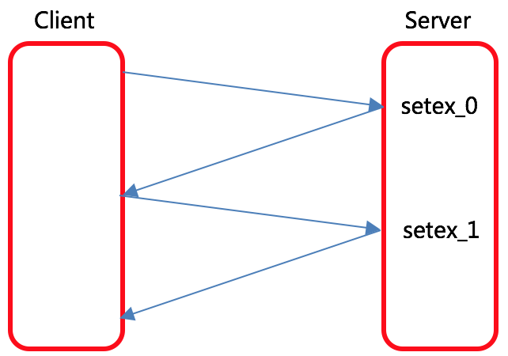
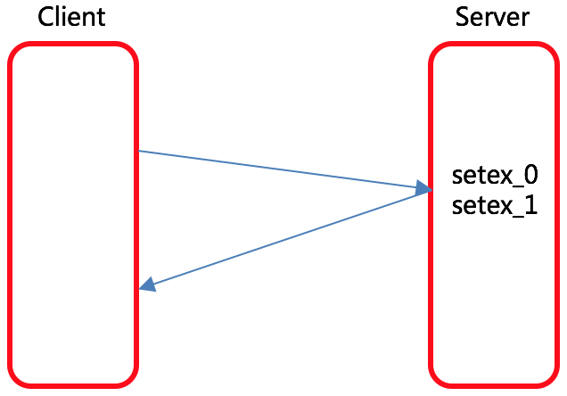

pipeline 操作 Redis 数据库
Redis的 C - S 架构：
基于客户端-服务端模型以及请求/响应协议的TCP服务。
客户端向服务端发送一个查询请求，并监听Socket返回。
通常是以阻塞模式，等待服务端响应。
服务端处理命令，并将结果返回给客户端。
存在的问题：
如果Redis服务端需要同时处理多个请求，加上网络延迟，那么服务端利用率不高，效率降低。
解决的办法：
管道 pipeline

pipeline 的介绍
管道 pipeline
可以一次性发送多条命令并在执行完后一次性将结果返回。
pipeline 通过减少客户端与Redis的通信次数来实现降低往返延时时间。
实现的原理
实现的原理是队列。
Client 可以将三个命令放到一个 tcp 报文一起发送。
Server 则可以将三条命令的处理结果放到一个 tcp 报文返回。
队列是先进先出，这样就保证数据的顺序性。

pipeline 操作 Redis 数据库
实现步骤
1. 创建Redis管道
2. 将Redis请求添加到队列
3. 执行请求
代码实现
# 创建 Redis 管道
pl = redis_conn.pipeline()
# 将 Redis 请求添加到队列
pl.setex('sms_%s' % mobile, 300, sms_code)
pl.setex('send_flag_%s' % mobile, 60, 1)
# 执行请求, 这一步千万别忘了
pl.execute()
改造完成之后, 我们当前的工程就变成了这样:
class SMSCodeView(View):
def get(self, reqeust, mobile):
redis_conn = get_redis_connection('verify_code')
send_flag = redis_conn.get('send_flag_%s' % mobile)
if send_flag:
return http.JsonResponse({'code': 400,
'errmsg': '发送短信过于频繁'})
image_code_client = reqeust.GET.get('image_code')
uuid = reqeust.GET.get('image_code_id')
if not all([image_code_client, uuid]):
return http.JsonResponse({'code': 400,
'errmsg': '缺少必传参数'})
image_code_server = redis_conn.get('img_%s' % uuid)
if image_code_server is None:
return http.JsonResponse({'code': 400,
'errmsg': '图形验证码失效'})
try:
redis_conn.delete('img_%s' % uuid)
except Exception as e:
logger.error(e)
image_code_server = image_code_server.decode()
if image_code_client.lower() != image_code_server.lower():
return http.JsonResponse({'code': 400,
'errmsg': '输入图形验证码有误'})
sms_code = '%06d' % random.randint(0, 999999)
logger.info(sms_code)
# 创建管道对象:
pl = redis_conn.pipeline()
# redis_conn.setex('sms_%s' % mobile, 300, sms_code)
pl.setex('sms_%s' % mobile, 300, sms_code)
# redis_conn.setex('send_flag_%s' % mobile, 60, 1)
pl.setex('send_flag_%s' % mobile, 60, 1)
# 执行管道:
pl.execute()
CCP().send_template_sms(mobile, [sms_code, 5], 1)
return http.JsonResponse({'code': 0,
'errmsg': '发送短信成功'})